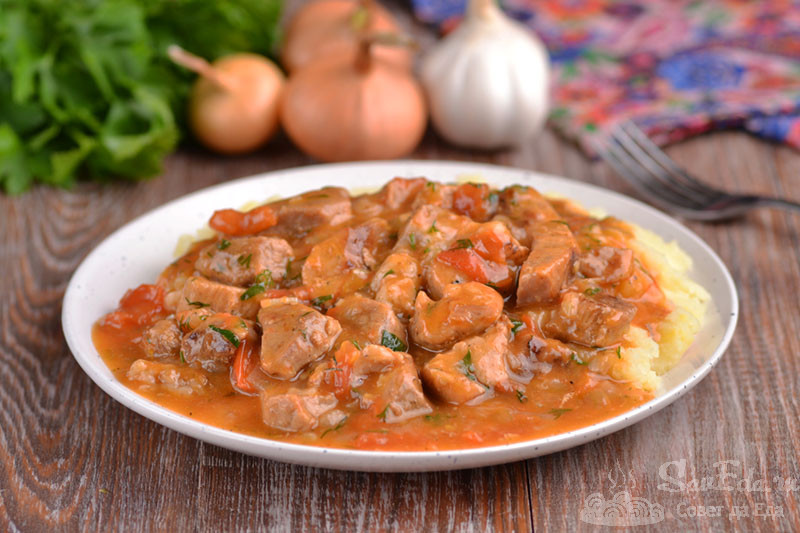

Время приготовления
1 час
Ингридиенты
- Мясо (свинина) - 300 г
- Лук репчатый - 1 шт.
- Томатная паста - 2 ст.л.
- Мука - 0,5-0,75 ст.л.
- Вода - 200 мл
- Масло растительное - для обжаривания
Энергетическая ценность
Каллорийность 150 ккал
-
Шаг: 1
Мясо и лук нарезать.
-
Шаг: 2
На разогретую сковороду с растительным маслом выложить мясо, обжарить до лёгкой корочки.
-
Шаг: 3
Добавить лук, закрыть крышкой, убавить огонь до среднего и жарить до готовности лука.
-
Шаг: 4
Мясо посолить, поперчить, добавить муку и перемешать.
-
Шаг: 5
Добавить томатную пасту.
-
Шаг: 6
Убавить огонь до минимума, влить воду, перемешать.
Закрыть крышкой и оставить томиться на час-полтора.